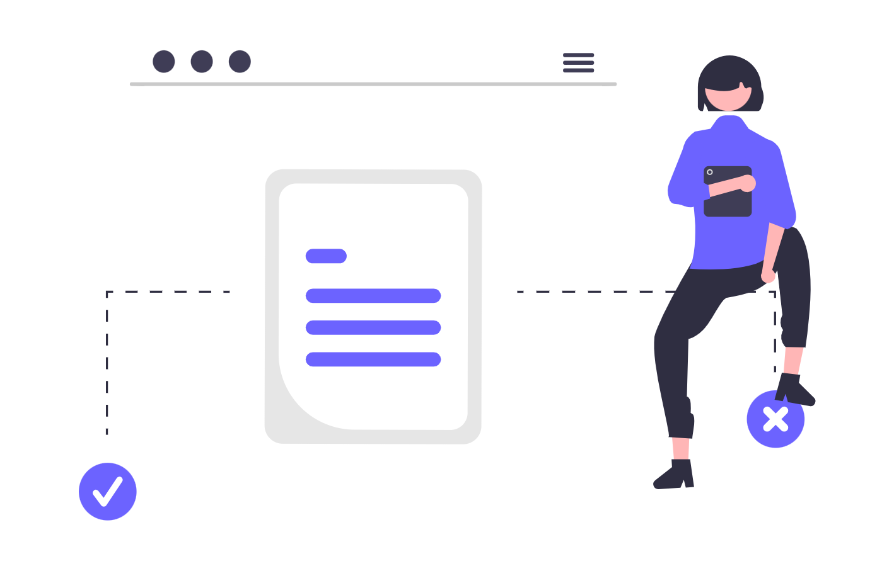

Notion este un spatiu de lucru digital care combina note, baze de date, sarcini si documentatie intr-o singura aplicatie. Spre deosebire de instrumentele specializate pe o singura functie (Trello pentru task-uri, Google Drive pentru fisiere, Outlook pentru email), Notion centralizeaza informatia: un dosar juridic poate fi o pagina cu baza de date de sarcini, documente atasate, note de sedinta, istoricul comunicarii cu clientul si termene calendarizate, toate intr-un singur loc accesibil oriunde. Configurat corect, devine memoria operationala a cabinetului.

Acest ghid acopera functionalitatile reale ale platformei, cu setari si configuratii specifice pentru practica juridica, inclusiv bazele de date relationale, automatizarile, Notion AI si managementul permisiunilor.
1. Structura de baza: Workspace, Pagini si Blocuri
Inainte de orice configuratie, intelege cele trei niveluri fundamentale:
- Workspace: spatiul de lucru al cabinetului, accesibil tuturor membrilor invitati. Echivalentul unui intranet privat.
- Pagina (Page): unitatea de baza din Notion. Poate contine text, baze de date, imagini, fisiere, embeduri sau alte pagini imbricate. O pagina poate fi un dosar, o procedura interna, o nota de sedinta sau o baza de date completa.
- Bloc (Block): orice element adaugat intr-o pagina - un paragraf, o lista, un titlu, o imagine, un tabel, o baza de date - este un bloc. Blocurile se muta, rearranjeaza si transforma prin comanda
/(slash command).
Structura recomandata pentru workspace-ul unui cabinet:
Cabinet [Workspace]
Dosare active [baza de date]
Clienti [baza de date]
Sarcini cabinet [baza de date]
Sablooane [folder cu pagini-sablon]
Proceduri interne [wiki de procese]
Note de sedinta [baza de date]
Resurse juridice [linkuri, acte normative, modele]
Arhiva [dosare finalizate]
Adauga paginile folosite zilnic in Favorites (click pe ... langa pagina din sidebar > Add to Favorites) pentru acces instant fara scroll.
2. Baze de date: tipuri si utilizari pentru avocati
Bazele de date sunt cel mai puternic instrument din Notion. Aceeasi baza de date poate fi vizualizata in mai multe moduri fara sa duplici datele.
Tipuri de vizualizare disponibile:
| Vizualizare | Utilizare in practica juridica |
|---|---|
| Table | Lista completa de dosare, clienti, sarcini - format tabelar, sortabil |
| Board | Dosare pe coloane de stare (Kanban): Nou, In lucru, Asteptare, Finalizat |
| Calendar | Termene de judecata si deadline-uri pe grila lunara |
| Timeline | Durata dosarelor pe axa temporala (similar Gantt) |
| List | Vizualizare simpla, compacta - utila pentru liste de sarcini sau documente |
| Gallery | Vizualizare cu imagini - mai putin relevanta in avocatura |
Adauga o vizualizare noua la orice baza de date existenta prin + Add a view din bara de sus a bazei de date, fara sa afectezi datele.
3. Proprietatile bazei de date: configurarea unui dosar juridic complet
Proprietatile (Properties) sunt coloanele bazei de date. Fiecare proprietate are un tip specific care controleaza ce date poate stoca si cum sunt afisate.
Schema recomandata pentru baza de date Dosare active:
| Proprietate | Tip | Utilizare |
|---|---|---|
| Titlu dosar | Title | [Nr.] - [Client] - [Obiect] |
| Client | Relation | Legatura cu baza de date Clienti |
| Stare | Select | Nou, In lucru, Asteptare client, La instanta, Finalizat |
| Tip procedura | Select | Civil, Penal, Comercial, Contencios, Executare silita |
| Instanta | Select | Judecatorie, Tribunal, Curte de Apel, ICCJ |
| Termen urmator | Date | Data termenului imediat urmator, cu reminder |
| Avocat responsabil | Person | Membrul echipei asignat |
| Data deschidere | Date | Data inregistrarii dosarului |
| Valoare obiect | Number | Format: RON sau EUR |
| Numar dosar instanta | Text | Numarul oficial din portal.just.ro |
| Prioritate | Select | Ridicata, Medie, Redusa |
| Note | Text | Camp de text scurt pentru observatii rapide |
Proprietatile de tip Relation (Legatura) sunt esentiale - permit conectarea dosarelor cu clientii, sarcinilor cu dosarele si notelor de sedinta cu dosarul aferent, fara sa duplici informatia.
4. Relatii si Rollup: conectarea bazelor de date
Relatiile si calculele de tip Rollup sunt functiile care transforma Notion dintr-un instrument de notite intr-un sistem de management al practicii.
Configurare Relation:
- In baza de date
Dosare active, adauga o proprietate noua de tip Relation. - Alege baza de date
Clientica destinatie. - Activeaza Show on Clienti pentru ca relatia sa fie vizibila si din fisa clientului (fiecare client vede automat toate dosarele asociate).
Configurare Rollup:
Dupa ce ai stabilit relatia Dosar - Client, adauga o proprietate Rollup in baza de date Clienti:
- Relation: selectezi relatia catre
Dosare active. - Property: alegi ce proprietate din dosare vrei sa agregezi (ex.
Stare). - Calculate:
Count all- numarul total de dosare per client;Count values- dosare cu stare completata;Show original- lista starilor.
Rezultat practic: in fisa oricarui client vezi instantaneu cate dosare are active, care este starea lor si care este urmatorul termen, fara sa deschizi fiecare dosar in parte.
5. Filtre si sortari avansate in baze de date
Fiecare vizualizare a unei baze de date poate avea filtre si sortari independente salvate, fara sa afecteze celelalte vizualizari.
Configurare filtre: click pe Filter in bara de sus a bazei de date > Add a filter > alege proprietatea si conditia.
Filtre utile pentru avocati:
StareesteIn lucruSAULa instanta- vizualizezi doar dosarele active, exclude arhiva.Termen urmatoreste in urmatoarele7 zile- dashboard de termene iminente pentru saptamana curenta.Avocat responsabilestepersoana curenta(Me) - fiecare avocat vede doar dosarele lui.PrioritateesteRidicataSIStarenu esteFinalizat- lista dosarelor critice in lucru.
Filtre avansate (grup de filtre): combina conditii cu AND / OR prin Add filter group pentru logica complexa (ex. dosarele cu termen in 7 zile SAU prioritate ridicata).
Sortari: click pe Sort > adauga mai multe sortari in ordine de prioritate (ex. mai intai dupa Prioritate descrescator, apoi dupa Termen urmator crescator).
Salveaza configuratia ca vizualizare separata cu un nume descriptiv (ex. Termene saptamana, Dosarele mele, Urgent).

6. Sabloane de pagina pentru fluxuri juridice recurente
Notion permite crearea de sabloane (templates) la nivel de baza de date - orice pagina noua creata in baza de date poate porni dintr-un sablon predefinit cu structura, proprietati si continut pre-completat.
Configurare sablon: in orice baza de date, click pe sageata de langa butonul New > + New template > construieste pagina sablon.
Sabloane recomandate pentru un cabinet de avocatura:
- Sablon dosar nou: pagina cu sectiunile
Date dosar,Istoricul comunicarii,Sarcini,Documente,Note de sedinta,Facturare. Proprietatile sunt pre-completate cu valorile implicite (stareNou, prioritateMedie). - Sablon nota de sedinta: data, participanti, ordine de zi, decizii, actiuni rezultate (cu casuta de bifare si responsabil asignat).
- Sablon onboarding client nou: checklist de onboarding cu pasii standard - primire documente, verificare identitate, contract de asistenta juridica, date de contact, creare dosar in sistem.
- Sablon raport lunar cabinet: structura fixa cu sectiunile
Dosare noi,Termene lunii,Facturare,Observatii- completezi doar datele variabile.
Cand creezi o intrare noua in baza de date si ai mai multe sabloane definite, Notion iti afiseaza o lista de selectie. Alegi sablonul potrivit si pagina porneste cu toata structura pre-construita.
7. Notion AI: utilizare specifica pentru avocati
Notion AI (disponibil prin abonament separat sau inclus in planurile Plus/Business) functioneaza direct in editorul de text, pe orice pagina sau baza de date. Spre deosebire de ChatGPT sau NotebookLM, AI-ul din Notion opereaza pe continutul paginii curente si pe contextul workspace-ului tau.
Comenzi AI utile in practica juridica (activate cu /AI sau cu click pe iconita AI):
- Summarize pe o nota lunga de sedinta: genereaza un rezumat in bullet points cu deciziile si actiunile rezultate.
- Extract action items din corpul unui e-mail copiat in Notion: listeaza automat sarcinile identificate, gata de transformat in intrari in baza de date
Sarcini. - Translate pentru documente primite intr-o alta limba: traducere directa in pagina, fara sa iesi din aplicatie.
- Fix spelling & grammar pe draft-uri in romana: corecteaza diacriticele si erorile gramaticale frecvente.
- Ask AI pe o pagina cu note factuale ale unui dosar: poti intreba
Care sunt datele contradictorii din aceste note?sauRezuma cronologic evenimentele descrise- raspunsul este ancorat in continutul paginii, nu generat din memorie generala.
Atentie: Notion AI trimite continutul selectat catre serverele Notion/OpenAI pentru procesare. Nu folosi aceasta functie pe documente care contin date cu caracter personal ale clientilor sau informatii protejate de secretul profesional fara sa fi citit si acceptat politica de date aplicabila.
8. Automatizari native in Notion
Notion Automations (disponibil in planurile Plus si superioare) permite crearea de reguli daca [trigger] atunci [actiune] fara instrumente externe.
Configurare: deschide o baza de date > click pe iconita ... (More) din bara de sus > Automations > + New automation.
Automatizari utile pentru avocati:
- Cand proprietatea
Starese schimba inFinalizat, seteaza automat proprietateaData finalizarela data curenta si adauga o notificare pentru avocatul responsabil. - Cand o intrare noua este creata in
Dosare activecu sablonulDosar nou, trimite automat o notificare catre avocatul coordonator. - Cand proprietatea
Termen urmatorajunge la data curenta, schimba automatStareinLa instantasi trimite notificare membrului asignat. - Cand
Prioritateeste setata laRidicata, adauga automat etichetaUrgentsi notifica avocatul responsabil.
Integrari externe cu Zapier sau Make: pentru automatizari mai complexe - ex. cand un client completeaza un formular Typeform, se creeaza automat o intrare in baza de date Clienti cu datele completate, si o a doua intrare in Dosare active legata de noul client.
9. Partajare, permisiuni si colaborare
Notion ofera control granular al accesului la nivel de workspace, pagina si baza de date.
Niveluri de acces disponibile:
| Nivel | Ce poate face membrul |
|---|---|
| Full access | Citire, editare, stergere, partajare cu altii |
| Can edit | Citire si editare, nu poate schimba permisiunile |
| Can edit content | Editeaza continutul paginilor, nu structura (nu adauga/sterge pagini) |
| Can comment | Citire si comentarii, fara modificari |
| Can view | Doar citire |
Recomandari pentru cabinete de avocatura:
- Avocatii din cabinet: Can edit la paginile comune (dosare, clienti, sarcini), Full access la paginile proprii.
- Stagiari: Can edit content la dosarele la care contribuie, Can view la restul.
- Clienti (acces limitat la stadiul dosarului): creeaza o pagina separata partajata cu link public sau prin email, care contine doar o vizualizare filtrata a bazei de date
Dosare(numai dosarele clientului respectiv, numai proprietatile publice - fara note interne, fara valori financiare). Seteaza accesul la Can view pe acel link. - Guest access: membrii invitati ca
Guestnu au acces la workspace in general - vad doar paginile partajate explicit cu ei. Ideal pentru avocati colaboratori externi.
Dezactiveaza Allow duplicate page si Allow export pentru paginile cu informatii sensibile din setarile avansate ale paginii.
10. Integrarea cu Google Calendar, Gmail si alte instrumente
Notion nu are integrare nativa bidirectionala cu Google Calendar, dar exista mai multe abordari practice:
- Embed Google Calendar: adauga
/embedintr-o pagina Notion si lipeste URL-ul de embed al calendarului Google - calendarele tale apar direct in pagina Notion (read-only). Util pentru o pagina de dashboard zilnic. - Zapier / Make: sincronizeaza bazele de date Notion cu Google Calendar - cand adaugi un
Termen urmatorintr-un dosar Notion, se creeaza automat un eveniment in Google Calendar, si invers. Fluxul invers (din Calendar in Notion) necesita un trigger bazat pe titlul evenimentului sau pe un tag specific. - Notion Web Clipper (extensie browser): salveaza orice pagina web, articol sau email vizualizat in browser direct intr-o pagina Notion, cu sursa si data cliparii. Util pentru salvarea hotararilor judecatoresti, articolelor de specialitate sau extractelor din legislatie.
- Email catre Notion: prin Zapier poti directiona automat emailuri cu un anumit subiect sau de la un anumit expeditor catre o pagina sau baza de date Notion - ex. toate emailurile de la instanta sunt salvate automat in dosarul Notion corespunzator.
- Slack: notificarile Notion (comentarii, mentiuni, modificari in baze de date) pot fi trimise automat in canale Slack prin integrarea nativa din Settings > My connections > Slack.
11. Securitate si confidentialitate pentru date juridice
- Two-factor authentication (2FA): activeaza din Settings & members > My account > Security > Two-factor authentication. Obligatoriu pentru toate conturile din workspace-ul unui cabinet.
- SAML SSO (Single Sign-On): disponibil in planurile Enterprise - permite autentificarea prin contul Microsoft 365 sau Google Workspace al organizatiei, eliminand parolele separate pentru Notion.
- Export control: dezactiveaza exportul de pagini pentru membrii care nu au nevoie de el din Settings & members > Settings > Disable public page sharing si Disable guests from exporting content.
- Audit log (plan Enterprise): inregistreaza toate actiunile din workspace - cine a accesat, modificat sau sters o pagina, cu timestamp. Util in contexte de compliance sau la plecarea unui angajat.
- Ștergerea definitiva: paginile sterse ajung in Trash si pot fi recuperate timp de 30 de zile (plan Plus) sau 90 de zile (plan Business/Enterprise). Dupa expirarea acestui termen sunt sterse definitiv. Asigura-te ca ai o politica clara de arhivare inainte de stergere.
- Date sensibile: Notion stocheaza datele pe servere AWS (regiuni US si EU). Daca legislatia aplicabila impune stocarea datelor exclusiv in UE, verifica setarile de regiune din planul Enterprise inainte de a migra date cu caracter personal ale clientilor.
12. Aplicatia mobila Notion
Aplicatia Notion pentru iOS si Android ofera acces complet la workspace, inclusiv editarea bazelor de date si crearea de pagini noi:
- Quick capture: din widgetul de pe ecranul de pornire (iOS/Android), adaugi rapid o nota, o sarcina sau o intrare in baza de date preferata fara sa deschizi aplicatia complet.
- Offline mode: paginile accesate recent sunt disponibile offline; modificarile se sincronizeaza la reconectare. Util la instanta sau in deplasari fara internet stabil.
- Shortcuts: pe iOS, poti adauga o pagina Notion ca shortcut pe ecranul de pornire prin Share > Add to Home Screen - deschizi direct baza de date
Dosare activefara sa navighi prin workspace. - Camera si fisiere: ataseaza fotografii (acte, contracte fizice) direct la orice pagina sau intrare in baza de date din butonul de atasamente al aplicatiei mobile.
- Notificari push: primesti notificari pentru mentiuni (
@numetal), comentarii noi si actualizari la paginile urmarite. Configureaza granular ce tipuri de notificari primesti din Settings > Notifications.
13. Tips & tricks care fac diferenta
/(slash command): deschide meniul de inserare a oricarui tip de bloc - baza de date, titlu, lista, imagine, cod, embed, divider. Invata 5-6 comenzi uzuale si nu mai ai nevoie de meniuri.[[(double bracket): deschide un selector de pagini pentru a insera un link intern catre orice pagina din workspace. Esential pentru a conecta note de sedinta la dosarul aferent fara sa duplici continut.@mentiune pagina sau persoana:@NumeColegin orice bloc trimite o notificare acelui coleg;@NumeDosarinsereaza un link live catre pagina dosarului.Ctrl+P/Cmd+P: deschide cautarea globala in workspace - cauta dupa titlu sau continut in toate paginile. Cel mai rapid mod de a naviga in workspace-uri mari.Ctrl+Shift+L: comuta intre modul light si dark.- Ancorare blocuri: orice bloc poate primi un link direct (click pe
...langa bloc > Copy link to block) - trimiti colegului exact sectiunea relevanta dintr-o pagina lunga, nu intreaga pagina. - Grupare in baze de date: pe vizualizarea Table sau Board, click pe Group si grupeaza intrarile dupa orice proprietate (ex.
Instanta,Avocat responsabil,Luna termenului) pentru o perspectiva agregata instantanee. - Sub-pagini: orice pagina poate contine pagini imbricate la infinit. Foloseste imbricarea pentru a pastra dosarele organizate ierarhic:
Dosar > Note de sedinta > Sedinta 15.04.2026. - Versiuni si istoricul paginii: click pe
...> Page history - vizualizezi si restaurezi orice versiune anterioara a paginii (disponibil 30-90 de zile in functie de plan).
Concluzie
Notion ofera o flexibilitate rara: poti construi exact sistemul de management al practicii de care ai nevoie, fara sa accepti limitarile unui software juridic rigid. Bazele de date relationale conecteaza clientii, dosarele, sarcinile si notele intr-un ecosistem coerent; sabloanele elimina munca repetitiva; Notion AI accelereaza procesarea informatiei; partajarea granulara permite colaborarea fara sa expui informatii confidentiale.
Dezavantajul principal: Notion necesita timp de configurare initiala si disciplina pentru a-l mentine organizat. Fara o structura bine gandita de la inceput si fara reguli interne clare (cine adauga ce, unde), workspace-ul devine haotic rapid. Nu este nici un software de facturare, nici un instrument de semnatura electronica - aceste nevoi raman acoperite de instrumente complementare.
Daca doresti sa implementezi un workspace Notion complet pentru cabinetul tau - cu baze de date relationale, sabloane, automatizari si permisiuni configurate corespunzator - echipa SOLON poate construi intreaga arhitectura si instrui echipa pentru adoptarea eficienta a sistemului.